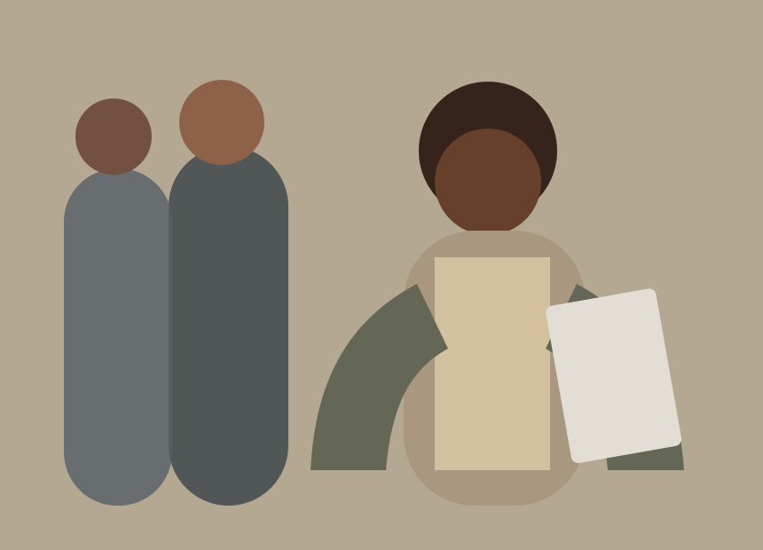
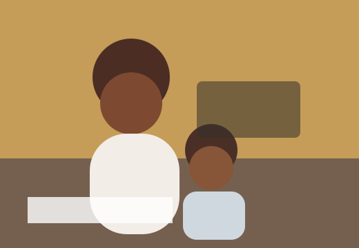

Parenting During Exams: How to Push Without Burning Them Out
by Dr Linda Meyer
Homeschooling for Beginners: 6 Anchors to Steady Your New Homeschool
by Anel van der Merwe
Cooking & Bonding
Learning through food, stories, and shared routines
Simple family activities that turn ordinary afternoons into useful learning time.
Creating calmer study spaces at home
Small adjustments that help children settle, focus, and finish the day well.